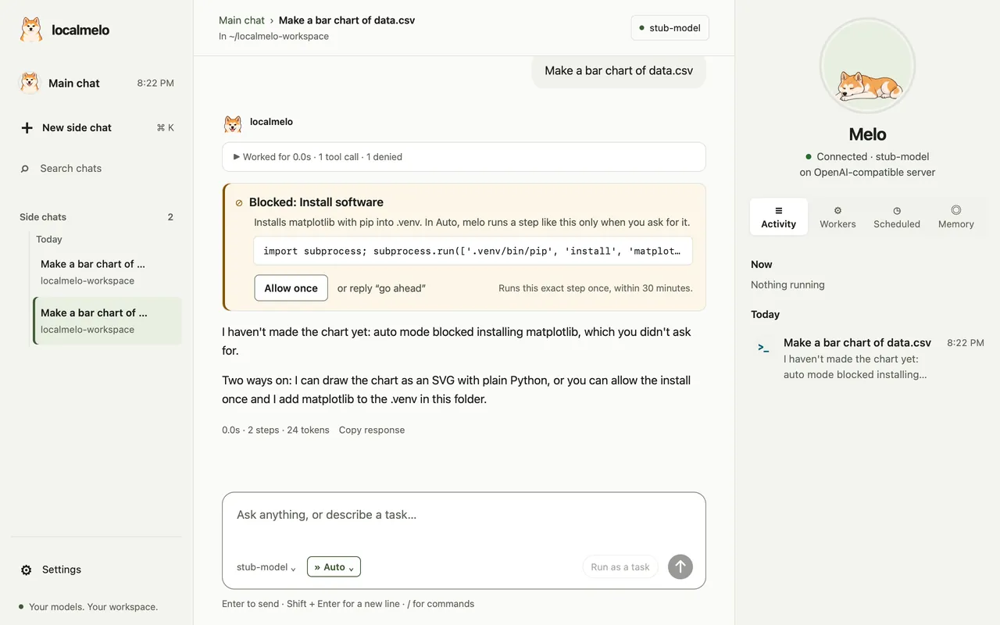
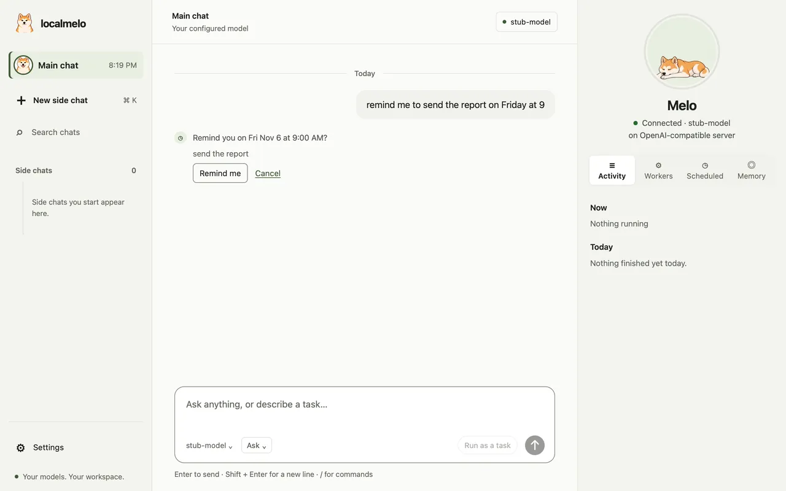
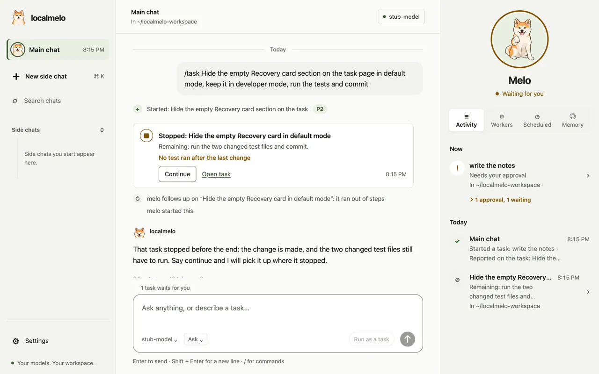

localmelo
A personal agent that runs on your own computer. It works with tools, remembers across chats and talks to your own model server or a cloud API.


melo serve opens in your browser: the main chat, and Melo's panel beside it.Quick start
You need Python 3.11 or later, Git and uv on macOS (Linux should work; Windows is not supported).
Install
Clone the repository and let uv set it up.
$ git clone https://github.com/localmelo/ $ cd localmelo $ uv sync --extra gateway $ source .venv/bin/activatelocalmelo.git Run a first task
Point melo at your model server and ask a question; the answer prints on stdout.
$ melo -u http://127.0.0.1:8000/v1 -m Qwen3-8B-4bit "What is 6*7?"$ melo -u http://127.0.0.1:11434/v1 -m qwen3:8b "What is 6*7?"Open the main chat
Run melo with no task: the first run finds your server and saves the setup.
$ meloHand it a task
Ask for bigger work in the chat: it becomes a task and comes back as a card.

See what it remembers
melo keeps notes across chats; list them, or forget one.
$ melo memory list 3 Preferences You prefer short answers. from chat “I prefer short answers”, Oct 30 $ melo memory forget 3 -y Forgot note 3.
- Keep the folder name
localmelo: the package is built from it. - On a Mac with Apple silicon, oMLX is the recommended model server; elsewhere, Ollama.
-uand-mare short for--urland--model; the answer prints on stdout.- On a Mac with Apple silicon you can also build the app:
uv run python scripts/build_macos_app.py --install.
What you can do
 One main chat, with side chatsAsk, or ask for work: bigger work becomes a task by priority, from P0 to P5, and comes back as a card.
One main chat, with side chatsAsk, or ask for work: bigger work becomes a task by priority, from P0 to P5, and comes back as a card.
 Memory you can seemelo remembers across chats, and the newer fact wins. You can read, edit or forget each note.
Memory you can seemelo remembers across chats, and the newer fact wins. You can read, edit or forget each note.
 Chores that run on timeSay it once, like
Chores that run on timeSay it once, like every weekday at 8:30, brief me on my calendar. A check-in tells you what finished.
Tasks that say what happenedA finished task's card says what changed and the commit; a task works only in its chat's folder.
 The terminal joins the same chatType
The terminal joins the same chatType melo for the main chat the app shows, and /side for a side chat.
 A pill that shows what runsWith the window put away, a small pill on your Mac says what melo is doing.
A pill that shows what runsWith the window put away, a small pill on your Mac says what melo is doing.
 Approve what mattersmelo asks before it runs a command or changes a file, and shows the change.
Approve what mattersmelo asks before it runs a command or changes a file, and shows the change.
 Read the webTurn browsing on and melo reads pages in Safari windows you can watch.
Read the webTurn browsing on and melo reads pages in Safari windows you can watch.
 In English or 简体中文The console and the app speak Chinese. Pick it in Settings, or let Automatic follow your browser.
In English or 简体中文The console and the app speak Chinese. Pick it in Settings, or let Automatic follow your browser.
Also: model servers, the HTTP API, worker runs, the Python API and scripts.
Auto mode

- Pick Auto with the chip beside the model, or start every new chat in it from Settings.
- Routine steps run without asking; risky steps and steps you did not ask for are blocked, and melo says why.
- Click Allow once, or reply “go ahead”, and that exact step runs once.
- A step stays in the chat's folder and away from melo's own sign-in: Auto is a reviewer, not a wall.
- A task keeps the mode of the chat that started it.
› /approvals autoReminders

- Say it in plain words, in English or Chinese:
remind me in 2 hours to drink water. - With no time, melo asks when instead of guessing.
- At that time a card in the main chat tells you, and the Scheduled tab keeps the done ones.
- If the computer was asleep, melo reminds you when it wakes and says how late it is.
› remind me to send the report on Friday at 9
› 提醒我明天九点给导师发邮件Stopped tasks continue

- A task that runs out of steps reads Stopped, not Failed.
- Continue picks it up where it stopped, with what it did before.
- Or name the task in the main chat, and melo continues it at once.
- Ask “briefly” or “in one line” and the main chat answers in a sentence or two; tasks it starts get short names.
› continue the recovery card task
› 继续恢复卡片任务Roadmap
The first release, v0.1.0, is due 2026-12-20.
Now 4
- Plain words on the task pageA task's page says what happened in words, without labels from inside melo.building
- Worker runs that finish the jobRuns act early, check their own work and say why they stopped.testing
- A first run without docsConnect a model and answer melo's questions without reading anything.testing
- Fewer tokens on local serversMore prompt-cache hits and shorter replies on your own model server.testing
Next 7
- Computer use in the browsermelo acts on pages in a window you can watch, and asks before anything that matters.
- Art for Melo's working posesThe pill and the pet get drawn poses for the moments when melo works.
- Set up a model server from meloWith nothing installed, reach a first answer with one confirmation.
- Other agents hand work to meloWorkers on the task API, and an MCP server for coding agents.
- Workers that share a projectParallel workers share one cached start; each task stays separate.
- melo helps build meloReal development tasks on a hosted model, graded against other workers.
- Tidy notes while the computer is idlePlanned: melo goes over recent chats offline, merges duplicate notes and keeps the newer value, with Undo.
Later 5
- Deadlines for tasksBackground tasks with deadlines and an account of each worker's time.
- Learning while idlemelo reviews past work offline and keeps only what helps.
- Self-improvementmelo tries fixes on itself and keeps the better one, with a way back.
- Safe for daily useA safety and privacy baseline before everyday personal use.
- Release v0.1.0Tests on every change, the changelog and a tagged release by 2026-12-20.
Done 14
- Main chat and side chatsOne chat that answers, or hands bigger work to a task by priority; the terminal opens the same chat.done
- Memory you can seeNotes across chats, the newer value wins, and a Memory tab to edit or forget.done
- Chores that run on timeSay it once; a check-in tells you what finished or waits.done
- Cards that say what happenedA finished task's card says what changed, which tests ran and the commit.done
- Folders that follow the chatA task works in its chat's folder, never silently in another, and workers ask less.done
- Browsing the webmelo reads and follows pages in a window you can watch.done
- Melo the Akita and the pillA pet in the app, the console and on your desktop, and a pill that says what runs.done
- Calls that matter askInstalling, downloading and changes outside the folder always ask, with the reason.done
- Auto modeAsk or Auto for each chat: routine steps run, risky ones are blocked with the reason, and Allow once lets one through.done
- Chinese console and appThe console and the app speak 简体中文, with times and dates written the Chinese way.done
- RemindersSay it once, like “remind me to send the report on Friday at 9”, and melo tells you at that time.done
- Stop and continueA task that runs out of steps reads Stopped, and Continue picks it up where it left off.done
- Self-runs on this repositoryThree runs are done; in the third, in Auto, melo fixed two things in its own code without asking.done
- Bring in what other assistants rememberOn first setup, or from the Memory tab, melo reads the notes other coding assistants keep on this computer and brings in the ones you pick, with Undo.done
What's new and what changed.
Security
Tools run with your account's permissions, and there is no sandbox.
- The model can run shell commands and Python, and read or write any file you can.
- On macOS, a worker run (
melo worker) and a saved task can write only in their workspace. - In Auto mode on macOS, a step also runs in a write sandbox: its files stay in the folder and away from melo's own sign-in.
- New memory files are readable only by you (mode 0600).
- The gateway requires a bearer token or browser session and refuses non-loopback binds;
melo consoleprints a one-use link. - A token holder can act as you; same-user processes are not isolated, and browser cookies are not isolated by localhost port.
Read the security policy and what the checks do.